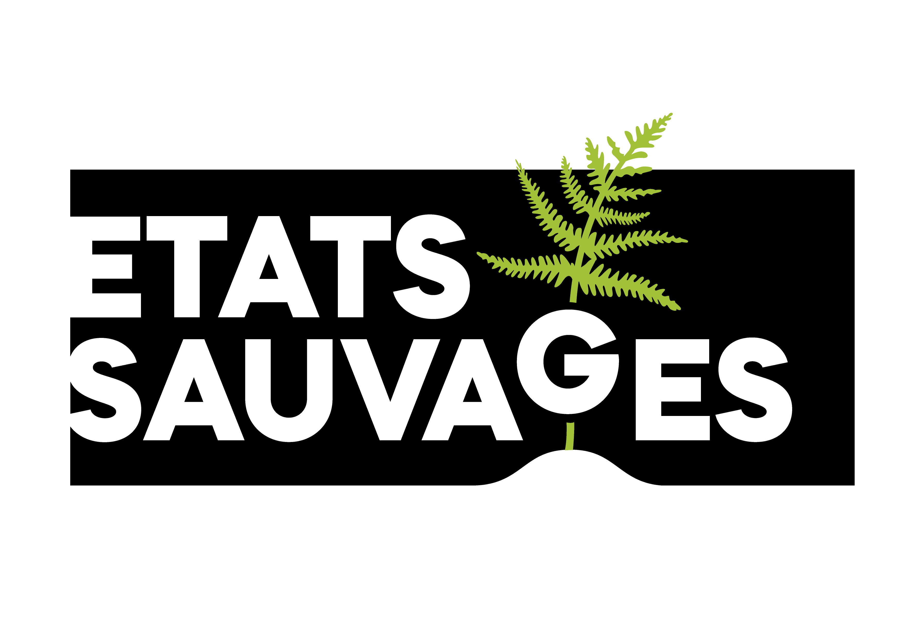

9:415G 92%

Connexion
Accède à tes relevés et à ton profil.
Emailrequis
Mot de passerequis
Erreur claire si identifiants invalides
A1 Login
Couverture des epics A-F et des règles du formulaire IBP: authentification, préparation, saisie guidée 10 facteurs, aide pédagogique, photos/GPS, confidentialité, offline/synchronisation, confiance qualité, carte nationale, profil/points/badges, classement, mission association et don.

Connexion
Accède à tes relevés et à ton profil.
Erreur claire si identifiants invalides
A1 Login
Bonjour Léa
Lance un relevé IBP ou continue un brouillon.
Points
1 240
Validés
37
Mission du mois
3 relevés publics en zone sous-observéeAssociation Etats-Sauvages
2100 ha suivis en 2026Home Dashboard
Mes relevés
Recherche + filtres (statut, date, site)
Créé 03/03 - 62% complété
BrouillonSoumis 02/03 - visible public
Submitted>7 jours
ExpiredB1 List + Search
Détail relevé
Site, historique, échéance J+7, progression.
Type: IBP v3.0 - ACA collinéen
Créé le 01/03/2026
Expire dans 18h
Visibilité
B2 Detail + Privacy
Formulaire guidé
Contexte relevé + règles globales
Champs requis clairement marqués
C1 Guided Entry
Checkbox par strate + couvert autochtone global
Score plafonné à 2 car couvert autochtone < 50%
C1 Factor B
Aide pédagogique (on-demand)
Affichage sans perdre l'état du formulaire.
Observe les couches couvrant au moins 20% de la zone.
Un même ligneux peut compter dans plusieurs strates.
1 strate=0, 2=1, 3-4=2, 5=5.
Plafond à 2 si couvert autochtone <50%.
5 strates observées + 40% couvert autochtone => score final 2.
C6 Pedagogical Help
Preuves terrain
Photos + géolocalisation + adresse manuelle fallback.
Photo 1
anomalie bois mort
Photo 2
lisière florifère
C3/C4 Photos & Geoloc
Résumé et soumission
Validation bloquante + choix confidentialité
Scores
Peuplement/Gestion: 22/35Contexte: 9/15Total: 31/50Visibilité
Public = carte/leaderboard; Private = perso + modérateurs
Blocage si champ requis manquant ou relevé > 7 jours
Confirmation locale après soumission
C5/C7 Submit + Visibility
Offline et synchronisation
Actions en file d'attente, reprise auto à la reconnexion.
pending_upload
sync_error: photo manquante
status: synced
Dernière sync 09:31
D1/D2 Offline + Sync
Historique & signalement
Traçabilité minimale + report contenu suspect.
Timeline
01/03 10:05 created by LeaM
03/03 08:44 modified
05/03 09:02 submitted
Espace modération
E1/E2/E3 Trust
Carte nationale IBP
Uniquement relevés publics et anonymisés.
Légende
• point public validé • zone active
Contributeurs actifs: 146
Relevés publics: 1 932
F1 France Map
Classement & badges
National/régional + filtres semaine/mois/tout.

Règles transparentes consultables

Nouveau badge mis en avant
F3/F4 Leaderboard + Badges
Mon profil
Edit infos + stats + logout sécurisé.
Points
1240
Validés
37
A3 + F2 Profile
Mission et impact
Section accessible depuis home/profil/carte.
Suivre et préserver la biodiversité forestière française.
2 100 ha suivis • 4 500 relevés
Le don reste optionnel et non bloquant.
Ouverture provider externe/webview
F5/F6 Mission + Donation